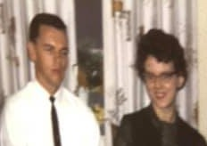
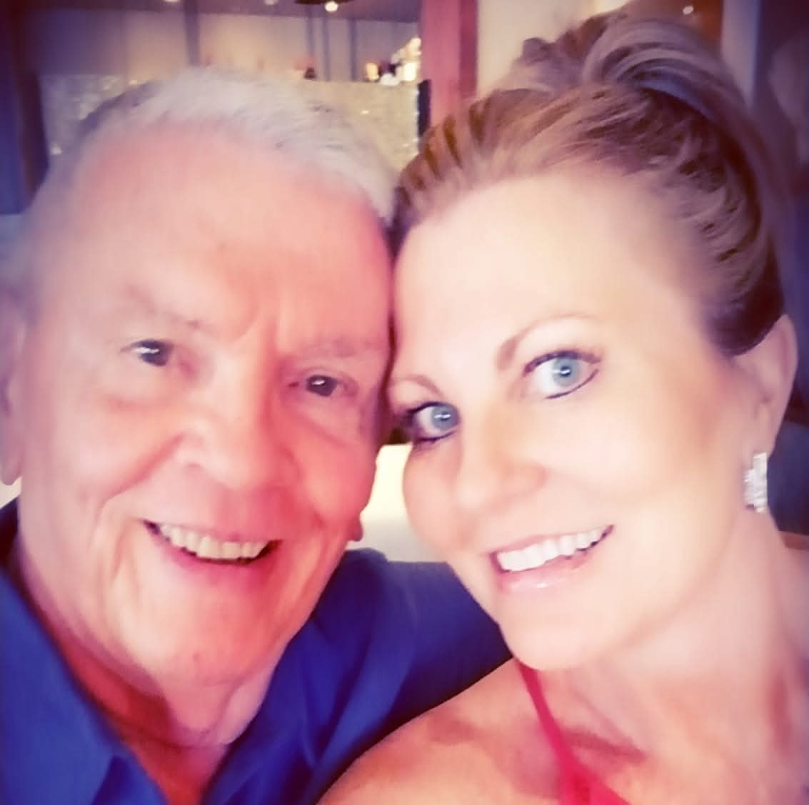
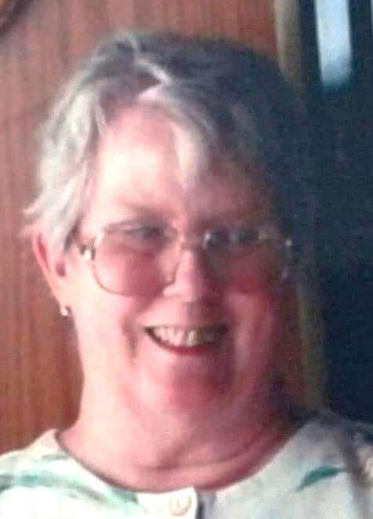
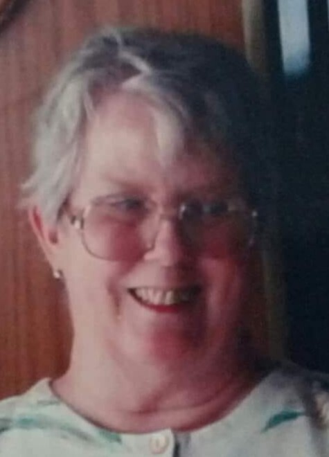
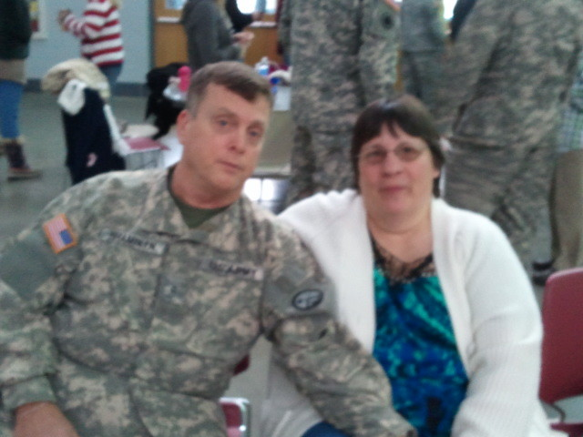
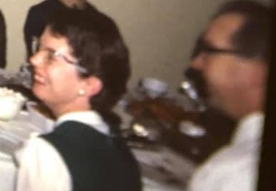

Lowell Harold Shamblen
Born 18 December 1935, Fairplain, West Virginia
Quick Facts
Evelyn Majors (d. 25 March 2020, Sanford, Florida) SUPPORTED
Immediate Family
Spouses
Helen Claire Powell (b. 6 August 1935, Sanford, Florida; d. 15 October 2005, Lake Mary, Florida) SUPPORTED — married 18 December 1953, Lake Mary, FloridaEvelyn Majors (d. 25 March 2020, Sanford, Florida) SUPPORTED
Children
David Lowell Shamblen (b. 3 October 1956, Charleston, West Virginia) SUPPORTED — wife Pamela Diane Shamblen; son Daniel R. ShamblenDonald Gene Shamblen (b. 5 March 1959, Charleston, West Virginia) SUPPORTED — wife Sherry Ann Shamblen; son Donny Ray Shamblen
Lisa Karen Mountcastle (b. 9 June 1962, Sanford, Florida) SUPPORTED — husband Ronald Thomas Mountcastle; sons Jason Todd, Justin David, and Jeremy Ryan Mountcastle
Siblings
- Lawrence Richard Shamblen (1932–1968)
- Betty Carolyn Shircliff (b. 1934)
- Clifford Earl Shamblen (b. 1938)
On Family Tree Sites
Research Folder
Life Timeline
1935 · age 0
Born, Fairplain, Jackson Co., WV SUPPORTED
1953 · age 18
Married Helen Claire Powell, Lake Mary, Florida SUPPORTED
1956 · age 20
Son David born, Charleston, WV SUPPORTED
1959 · age 23
Son Donald born, Charleston, WV SUPPORTED
1962 · age 26
Daughter Lisa born, Sanford, Florida SUPPORTED
2005 · age 69
Helen died, Lake Mary, Florida SUPPORTED
2020 · age 84
Evelyn died, Sanford, Florida SUPPORTED
Life Story
Lowell Harold Shamblen was born December 18, 1935, in Fairplain, Jackson County, West Virginia, the third child of Arvel Lawrence Shamblin and Georgia Mae Fisher.
He followed his older brother Richard into the Air Force and police work, and took college courses with Richard at the West Virginia State College of Technology. FAMILY ACCOUNT
He married Helen Claire Powell on December 18, 1953, in Lake Mary, Florida. Their children were David, born in 1956 in Charleston, Donald, born in 1959 in Charleston, and Lisa, born in 1962 in Sanford, Florida. Helen died in 2005 in Lake Mary. Lowell later married Evelyn Majors, who died in 2020 in Sanford, where Lowell lives.
On the 1944 family portrait, Lowell himself commented: "I am the good looking one front center."
Photo Gallery









Sources and Evidence
- Geni, read 2026-11-03: Lowell Harold Shamblen profile, spouses, children, and parents SUPPORTED
- FamilySearch, read 2026-11-03: Lowell Shamblen, PN3J-N81, birth 18 December 1935, Fairplain SUPPORTED
- WikiTree: Lowell Shamblen-48, son of Arvel Shamblin-435 and Georgia Fisher-24678 SUPPORTED
- Ancestry, Rick's Brewster Family Tree: Lowell Shamblen, 162817237912 SUPPORTED
- 1940 census, Ripley District, Jackson County, West Virginia (household of Arvel and Georgia) SUPPORTED
- Lawrence × Ruth couple profile: Lowell followed Richard into the Air Force and police work; college courses with Richard FAMILY ACCOUNT
- Lowell Shamblen's own comment on the 1944 family portrait FAMILY ACCOUNT
Grades: DOCUMENTED an original record says it · SUPPORTED several records point to it · FAMILY ACCOUNT the family's own telling · UNPROVED a lead, not proved.
Research Notes and Open Questions
- FamilySearch shows Lowell as Living with no spouse or children listed; the living flags and the empty spouse/child fields were left untouched, and no death is inferred.
- FamilySearch supplies Fairplain as Lowell's birthplace; the Ancestry profile on Rick's tree leaves the birthplace blank.
DNA
No DNA matches linked yet.
Profile history: Created 3 November 2026 from Geni, Ancestry, WikiTree, and FamilySearch profiles and family notes.